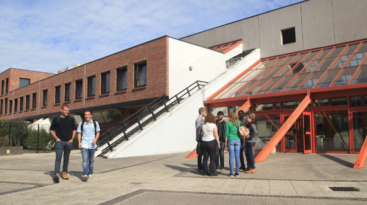

$ QuiSuisJe
Julie Lim
Étudiante en Informatique
Passionnée par l’administration système, le réseau et l’automatisation. Découvrez mes projets, mes compétences et mon parcours en BUT Informatique.
À propos de moi

Actuellement en BUT Informatique à l’IUT du Littoral Côte d’Opale à Calais, je me forme aux systèmes, aux réseaux, à la cybersécurité et à l’automatisation.
Mon objectif est de développer des compétences solides pour administrer, sécuriser et maintenir des infrastructures informatiques fiables.
Mes projets
Migration d’un serveur de fichiers
Administration système · droits d’accès · sauvegarde
Migration d’un serveur de fichiers
Administration système · droits d’accès · sauvegardeProjet réalisé en entreprise autour de l’organisation des partages, de la gestion des droits utilisateurs et de la préparation d’une migration vers une infrastructure plus propre et plus maintenable.
Infrastructure de virtualisation
Cluster · haute disponibilité · stockage
Infrastructure de virtualisation
Cluster · haute disponibilité · stockageMise en place et étude d’une infrastructure de virtualisation avec plusieurs hôtes, dans le but de mieux comprendre la haute disponibilité, le stockage partagé et le déploiement de machines virtuelles.
Configuration réseau Cisco
Routage · VLAN · ACL · sécurité réseau
Configuration réseau Cisco
Routage · VLAN · ACL · sécurité réseauTravaux pratiques réalisés sur Packet Tracer autour de la configuration réseau : adressage IP, VLAN, routage dynamique, ACL et sécurisation des échanges entre différents segments du réseau.
Automatisation de tâches IT
Support informatique · scripts · gain de temps
Automatisation de tâches IT
Support informatique · scripts · gain de tempsCréation de scripts pour automatiser certaines tâches répétitives, faciliter le support informatique et fiabiliser les actions d’administration sur des postes ou serveurs.
Me contacter
Vous pouvez me contacter pour échanger au sujet de mon parcours, de mes projets ou d’une opportunité professionnelle.
Email : julielim627001@gmail.com
Mon profil LinkedIn